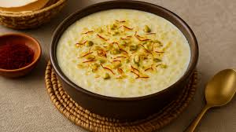

Kheer

- Ingredients
- Rice
- Milk
- Sugar
- Cardamom Powder
- Ghee
- Cashews and Raisins
- Recipe
- Wash and soak the rice for 15 to 20 minutes.
- Boil milk in a pan.
- Add the soaked rice to the boiling milk and cook on low heat, stirring occasionally.
- Add sugar and cardamom powder once the rice is soft.
- In a small pan, heat ghee and lightly fry cashews and raisins, then add to the kheer.
- Cook until the mixture thickens slightly and has a creamy consistency.
- Serve warm or chilled as per preference.